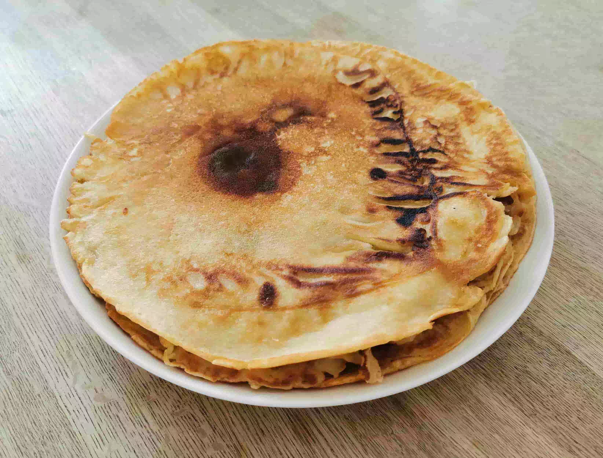

Danish Pancake

Danish Pancake recipe
Ingredients
- 375g wheat flour
- a little bit of salt (1/3 of a teaspoon)
- 1 ½ tablespoon sugar
- 9 dl milk
- 4 Eggs
Directions
- Put all the ingredients in a bowl and stir until it’s all mixed up.
- Preheat a pan with butter or Margarine.
- Turn when one side starts turning brown.
- They are done when both sides start turning brown.
- Add Butter or Margarine when needed.
Served With
- Sugar
- Syrup
- Powdered sugar
- Marmalade (Jam)
Contribution
Jesper
XMR: 88cPx6Gzv5RWRRJLstUt6hACF1BRKPp1RMka1ukyu2iuHT7iqzkNfMogYq3YdDAC8AAYRqmqQMkCgBXiwdD5Dvqw3LsPGLU
Recipe tags: quick, breakfast, sweet, pancake, cheesefare